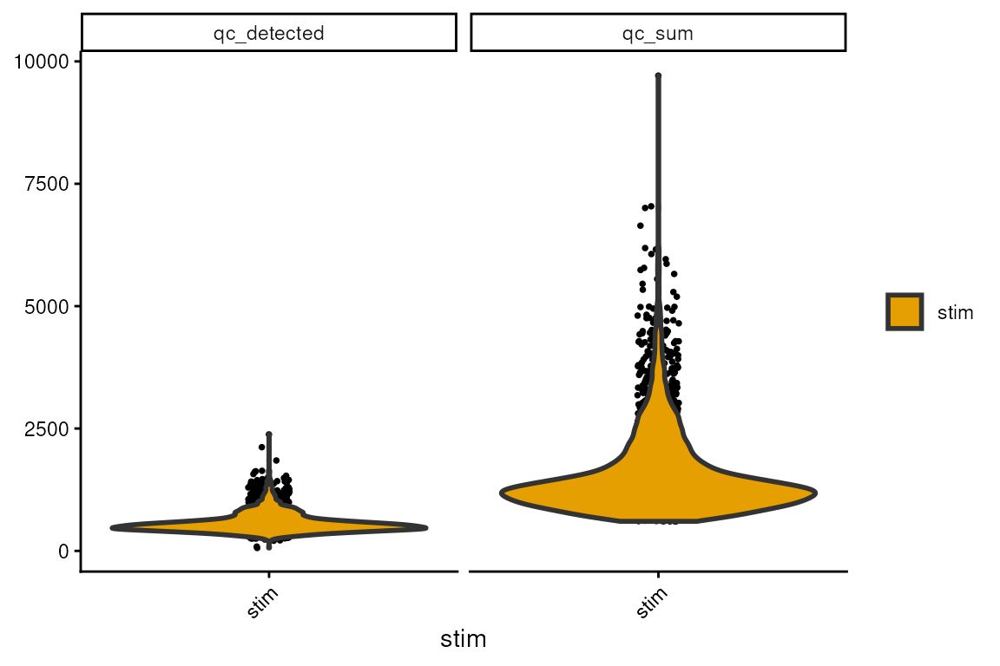
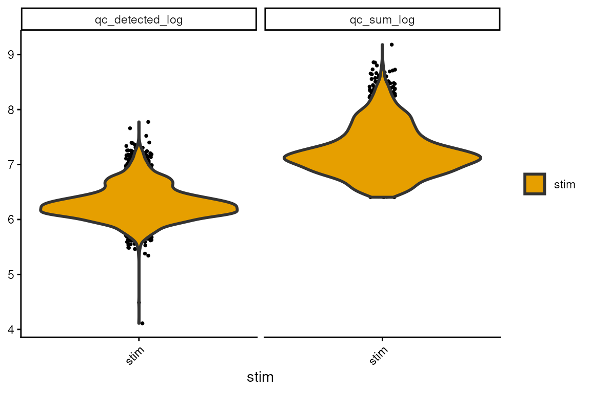
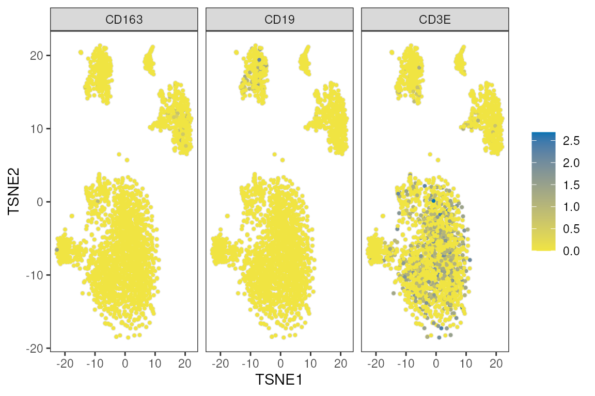
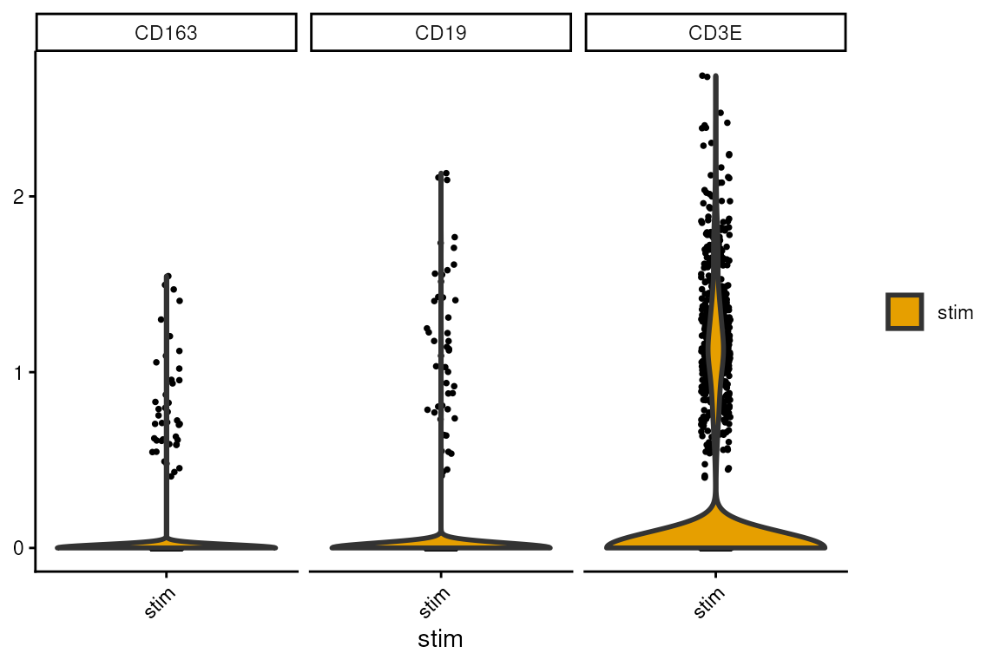
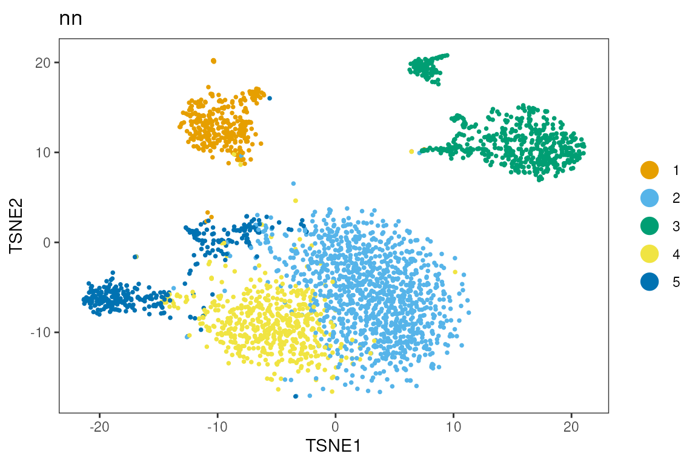
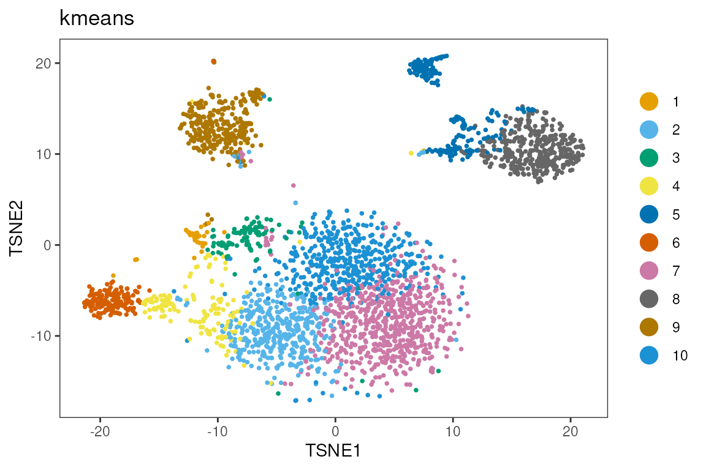
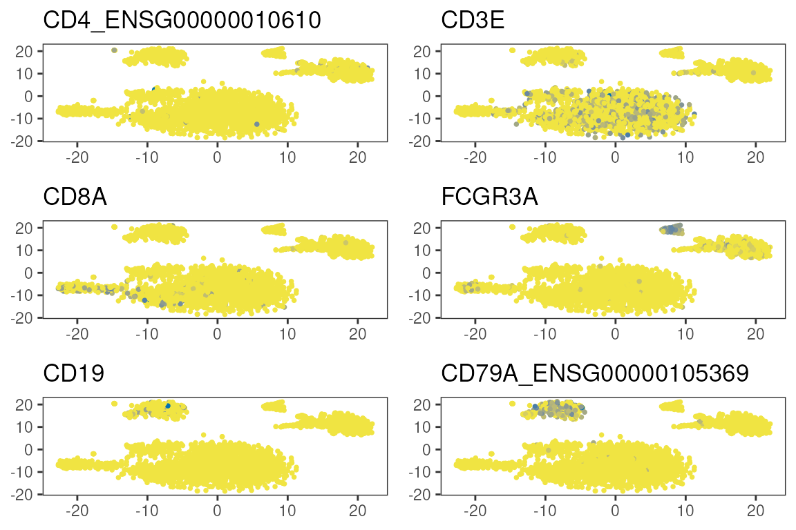

scRNA-seq analysis workshop
Michael Lynch
School of Medicine, University of Limerickmichael.lynch@ul.ie Source:
vignettes/S02_single_sample_workflow.Rmd
S02_single_sample_workflow.RmdSingle-cell RNA-seq in Bioconductor
Data Loading
library(muscData)
#> Loading required package: ExperimentHub
#> Loading required package: AnnotationHub
#> Loading required package: BiocFileCache
#> Loading required package: dbplyr
#>
#> Attaching package: 'AnnotationHub'
#> The following object is masked from 'package:Biobase':
#>
#> cache
sce<-Kang18_8vs8()
#> see ?muscData and browseVignettes('muscData') for documentation
#> loading from cache
sce<-sce[,sce$ind==1488&sce$stim=='stim']Quality Control
is.mito <- grep('^MT-',rownames(sce))
rownames(sce)[is.mito]
#> [1] "MT-ND1" "MT-ND2" "MT-CO1" "MT-CO2" "MT-ATP8" "MT-ATP6" "MT-CO3"
#> [8] "MT-ND3" "MT-ND4L" "MT-ND4" "MT-ND5" "MT-ND6" "MT-CYB"
rowSums(counts(sce))[is.mito]
#> MT-ND1 MT-ND2 MT-CO1 MT-CO2 MT-ATP8 MT-ATP6 MT-CO3 MT-ND3 MT-ND4L MT-ND4
#> 0 0 0 0 0 0 0 0 0 0
#> MT-ND5 MT-ND6 MT-CYB
#> 0 0 0
sum(rowSums(counts(sce))==0)
#> [1] 21241
library(scuttle)
df <- perCellQCMetrics(sce, subsets=list(Mito=is.mito))
#> Warning in .per_cell_qc_metrics(assay(x, assay.type), subsets = subsets, : 'perCellQCMetrics' is deprecated.
#> Use 'scrapper::computeRnaQcMetrics' instead.
#> See help("Deprecated")
summary(df$sum)
#> Min. 1st Qu. Median Mean 3rd Qu. Max.
#> 604 1015 1290 1552 1786 9709
hist(df$subsets_Mito_sum)
sce$qc_sum<-df$sum
sce$qc_detected<-df$detected
sce$qc_detected_log<-log(sce$qc_detected+1)
sce$qc_sum_log<-log(sce$qc_sum+1)
sce<-logNormCounts(sce)
#> Warning in .library_size_factors(assay(x, assay.type), ...): 'librarySizeFactors' is deprecated.
#> Use 'scrapper::centerSizeFactors' instead.
#> See help("Deprecated")
#> Warning in .local(x, ...): 'normalizeCounts' is deprecated.
#> Use 'scrapper::normalizeCounts' instead.
#> See help("Deprecated")
dittoPlot(sce,c('qc_sum_log','qc_detected_log'),group.by='stim')
Dimension Reduction
sce$ind<-as.character(sce$ind)
dittoDimPlot(sce,reduction.use = 'TSNE',c('CD3E','CD163','CD19'))

## Clustering
sce$nn<-clusterCells(sce,use.dimred = 'PCA', BLUSPARAM=NNGraphParam(k=20,cluster.fun = 'louvain',cluster.args = list(resolution=0.75)))
#> Warning in clusterCells(sce, use.dimred = "PCA", BLUSPARAM = NNGraphParam(k = 20, : 'clusterCells' is deprecated.
#> Use 'bluster::clusterRows' instead.
#> See help("Deprecated")
sce$kmeans<-clusterCells(sce,use.dimred = 'PCA', BLUSPARAM=KmeansParam(centers=10))
#> Warning in clusterCells(sce, use.dimred = "PCA", BLUSPARAM = KmeansParam(centers = 10)): 'clusterCells' is deprecated.
#> Use 'bluster::clusterRows' instead.
#> See help("Deprecated")
dittoDimPlot(sce,reduction.use = 'TSNE','nn')
dittoDimPlot(sce,reduction.use = 'TSNE','kmeans')
table(sce$cluster,sce$nn)
#>
#> 1 2 3 4 5
#> 1 0 0 96 0 0
#> 2 15 1 0 2 3
#> 3 3 2 0 2 84
#> 4 312 0 1 1 5
#> 5 0 36 0 6 2
#> 6 20 1046 13 474 48
#> 7 0 0 1 0 166
#> 8 0 0 475 0 0
#> 9 0 0 7 0 0
#> 10 3 1 1 51 37
genes<-c('CD4_ENSG00000010610','CD3E','CD8A','FCGR3A','CD19','CD79A_ENSG00000105369')
genes %in% rownames(sce)
#> [1] TRUE TRUE TRUE TRUE TRUE TRUE
multi_dittoDimPlot(sce,reduction.use='TSNE',genes)
Reflection
- How could the analysis have been done differently?
- How does this impact the validity of the results?
- What would have changed if there were cells from multiple samples?
sessionInfo()
#> R version 4.6.1 (2026-06-24)
#> Platform: x86_64-pc-linux-gnu
#> Running under: Ubuntu 24.04.4 LTS
#>
#> Matrix products: default
#> BLAS: /usr/lib/x86_64-linux-gnu/openblas-pthread/libblas.so.3
#> LAPACK: /usr/lib/x86_64-linux-gnu/openblas-pthread/libopenblasp-r0.3.26.so; LAPACK version 3.12.0
#>
#> locale:
#> [1] LC_CTYPE=en_US.UTF-8 LC_NUMERIC=C
#> [3] LC_TIME=en_US.UTF-8 LC_COLLATE=en_US.UTF-8
#> [5] LC_MONETARY=en_US.UTF-8 LC_MESSAGES=en_US.UTF-8
#> [7] LC_PAPER=en_US.UTF-8 LC_NAME=C
#> [9] LC_ADDRESS=C LC_TELEPHONE=C
#> [11] LC_MEASUREMENT=en_US.UTF-8 LC_IDENTIFICATION=C
#>
#> time zone: Etc/UTC
#> tzcode source: system (glibc)
#>
#> attached base packages:
#> [1] stats4 stats graphics grDevices utils datasets methods
#> [8] base
#>
#> other attached packages:
#> [1] muscData_1.27.1 ExperimentHub_3.3.2
#> [3] AnnotationHub_4.3.2 BiocFileCache_3.3.0
#> [5] dbplyr_2.6.0 bluster_1.23.1
#> [7] scran_1.41.1 scater_1.41.2
#> [9] scuttle_1.23.2 SingleCellExperiment_1.35.2
#> [11] SummarizedExperiment_1.43.0 Biobase_2.73.2
#> [13] GenomicRanges_1.65.4 Seqinfo_1.3.2
#> [15] IRanges_2.47.5 S4Vectors_0.51.10
#> [17] BiocGenerics_0.59.12 generics_0.1.4
#> [19] MatrixGenerics_1.25.0 matrixStats_1.5.0
#> [21] dittoSeq_1.25.0 ggplot2_4.0.3
#> [23] BiocStyle_2.41.0
#>
#> loaded via a namespace (and not attached):
#> [1] DBI_1.3.0 httr2_1.3.0 gridExtra_2.3.1
#> [4] rlang_1.3.0 magrittr_2.0.5 otel_0.2.0
#> [7] ggridges_0.5.7 compiler_4.6.1 RSQLite_3.53.3
#> [10] png_0.1-9 systemfonts_1.3.2 vctrs_0.7.3
#> [13] crayon_1.5.3 pkgconfig_2.0.3 fastmap_1.2.0
#> [16] XVector_0.53.0 labeling_0.4.3 rmarkdown_2.32
#> [19] ggbeeswarm_0.7.3 ragg_1.5.2 purrr_1.2.2
#> [22] bit_4.6.0 xfun_0.61 cachem_1.1.0
#> [25] beachmat_2.29.3 jsonlite_2.0.0 blob_1.3.0
#> [28] DelayedArray_0.39.8 BiocParallel_1.47.0 irlba_2.4.1
#> [31] parallel_4.6.1 cluster_2.1.8.3 R6_2.6.1
#> [34] bslib_0.12.0 RColorBrewer_1.1-3 limma_3.99.0
#> [37] jquerylib_0.1.4 Rcpp_1.1.2 bookdown_0.48
#> [40] knitr_1.52 BiocBaseUtils_1.15.1 Matrix_1.7-6
#> [43] igraph_2.3.4 tidyselect_1.2.1 abind_1.4-8
#> [46] yaml_2.3.12 viridis_0.6.5 codetools_0.2-20
#> [49] curl_8.0.0 lattice_0.23-1 tibble_3.3.1
#> [52] KEGGREST_1.53.6 withr_3.0.3 S7_0.2.2
#> [55] Rtsne_0.17 evaluate_1.0.5 desc_1.4.3
#> [58] Biostrings_2.81.9 filelock_1.0.3 pillar_1.11.1
#> [61] BiocManager_1.30.27 BiocVersion_3.24.0 scales_1.4.0
#> [64] glue_1.8.1 metapod_1.21.0 pheatmap_1.0.13
#> [67] tools_4.6.1 BiocNeighbors_2.7.3 ScaledMatrix_1.21.0
#> [70] locfit_1.5-9.12 fs_2.1.0 cowplot_1.2.0
#> [73] grid_4.6.1 AnnotationDbi_1.75.2 edgeR_4.99.6
#> [76] colorspace_2.1-4 beeswarm_0.4.0 BiocSingular_1.29.2
#> [79] vipor_0.4.7 cli_3.6.6 rsvd_1.0.5
#> [82] rappdirs_0.3.4 textshaping_1.0.5 S4Arrays_1.13.2
#> [85] viridisLite_0.4.3 dplyr_1.2.1 gtable_0.3.6
#> [88] sass_0.4.10 digest_0.6.39 SparseArray_1.13.4
#> [91] ggrepel_0.9.8 dqrng_0.4.1 htmlwidgets_1.6.4
#> [94] farver_2.1.2 memoise_2.0.1 htmltools_0.5.9
#> [97] pkgdown_2.2.1 lifecycle_1.0.5 httr_1.4.9
#> [100] statmod_1.5.2 bit64_4.8.6